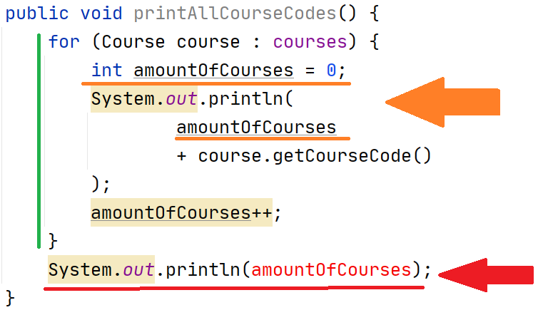
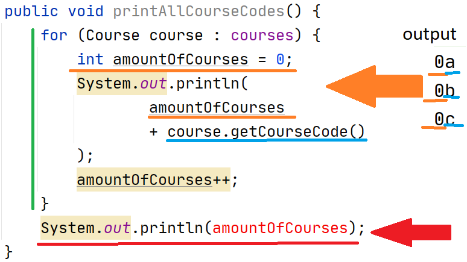
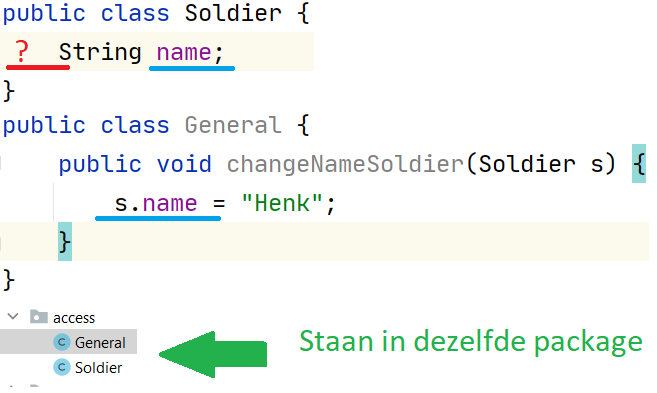
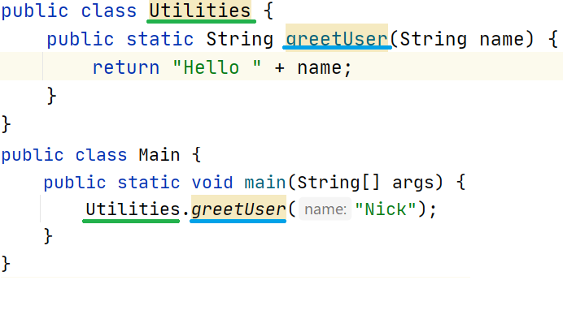

Java Programmeren
Les 4 - Methodes
Inhoud
- Polymorfisme
- Abstracte klassen
- Huiswerkopdrachten
- Scope
- Access Modifiers
- Keywords
- Static
- Overloading
Polymorfisme
Wanneer je een superklasse definieert, kan elke subklasse vervangen worden door zijn supertype
Dit ga je zometeen snappen
Stel je voor, je hebt deze code
public class Person
public class FamilyDoctor extends Person
Person person = new Person();
FamilyDoctor familyDoctor = new FamilyDoctor();
Maar FamilyDoctor extends Person
Person familyDoctor = new FamilyDoctor();
List<Person> persons = new ArrayList<>();
persons.add(familyDoctor);
Praktijkvoorbeeldje
- Constructors beide klassen
- Wanneer welke methodes?
- Oplossing hiervoor?
Opdracht nakijken
Polymorfisme Les 01
Abstracte klassen
Abstracte klassen
- Abstracte klassen kunnen niet geinstantieerd worden
- Kunnen abstracte methodes bevatten
- Mag gewone methodes bevatten!
public abstract class Person
Abstracte methodes
- Hebben geen body
- Moeten geïmplementeerd worden in concrete subklassen.
- Gebruik @Override annotatie
Abstracte methode - code
void work();
String encryptPassword(String password);
@Override
public void work() {
System.out.println("Ja");
}
@Override
String encryptPassword(String password) {
return password + "encrypted";
}
Opdracht bespreken
- Overerving les 02
- Overerving opdracht 01
Scope
Met scope bedoelen we de toegankelijkheid en de levensvatbaarheid van een variabele.
Vier scopes
- Klasse scope
- Methode scope
- Loop scope
- Bracket scope
Klasse scope

Methode scope

Cannot resolve symbol 'decibel'
Loop scope (1)

Cannot resolve symbol 'i'
Loop scope (2.1)
Loop scope (2.2)
Bracket scope
Gebruik deze gewoon niet.
{
// Gebruik mij niet
}
Access modifiers
The four
- private
- package private
- protected
- public
Public & private
- Public: beschikbaar voor alle Java-code
- Private: beschikbaar binnen de klasse
Package private
Package private
Super handig voor encapsulatie
Protected
- Toegang vanuit dezelfde package en de subklasse
- Subklasse mogen dus ook in een andere package staan!
- Super() werkt met protected.
- Beter dan public, want?
public abstract class Phone {
protected List<String> callTechnologies;
public Phone() {
this.callTechnologies = new ArrayList<>();
callTechnologies.add("2g");
}
protected abstract void call();
}
public class SmartPhone extends Phone {
public SmartPhone() {
super();
this.callTechnologies.add("3g");
}
@Override
protected void call() {
System.out.println("I call");
}
}
Ja?
Even kijken in Intellij
- Wat als we het private maken?
- En public?
- En package private?
- En de klasse verplaatsen?
Overweeg je public access-modifiers op protected te zetten in de super-klasse
Keywords
- Meer dan vijftig
- Meeste heb je al gezien
- Final!
Final!
Te gebruiken op drie niveau's
- Klasse-niveau
- Methode-niveau
- Instantievariabele-niveau (instance variable)
Final - klasse niveau
- Voorkomt dat klasse extend kan worden.
- Dus de klasse kan niet als superklasse fungeren
- Wanneer je dit wel probeert, volgende foutmelding:
"Cannot inherit from final 'package.classname'".
Final - Methode niveau
- Voorkomt dat een methode overriden kan worden.
- Zeer handig als je een zeer strict contract wilt opstellen
- De vraag is of je dat wilt. Maakt je code minder uitbreidbaar!
- Geeft de volgende foutmelding:
"'methodName()' cannot override 'methodName()' in 'packages.ClassName'; overridden method is final".
Final - Instance variable
Wil je dat een waarde niet meer aangepast kan worden na toekenning. Dan gebruik je final
- Moet of direct een waarde gegeven worden
- of via (alle) constructor(s)
public class Car {
private final int amountOfWheels = 4;
}
public class Car {
private final int amountOfWheels;
public Car(int amountOfWheels) {
this.amountOfWheels = amountOfWheels;
}
}
public class Car {
private final int amountOfWheels;
private String engineType;
public Car(int amountOfWheels) {
this.amountOfWheels = amountOfWheels;
}
public Car(int amountOfWheels, String engineType) {
this.amountOfWheels = amountOfWheels;
this.engineType = engineType;
}
}
public class Car {
private final int amountOfWheels;
private String engineType;
public Car(String engineType) {
this.engineType = engineType;
this.amountOfWheels = 4;
}
}
Te gebruiken voor
- Waardes die uiteindelijk niet meer aangepast mogen worden
- Afdwingen dat instance variables een waarde krijgen
Errors veroorzaakt door final
- Cannot inherit from final 'packages.ClassName
- 'methodName()' cannot override 'methodName()' in 'packages.ClassName'; overridden method is final
- Cannot assign a value to final variable 'Variabele-Naam'
- Variable 'Variabele-Naam' might not have been initialized
- Illegal combination of modifiers: 'final' and 'abstract'
Static
- Static methods
- Static instance variables
Static Methods
Is een methode die
- je kunt aanroepen zonder een klasse te instantiëren.
- Staat het keywoordje static in.
- Werkt voor de rest hetzelfde als een normale methode
- Maar kan geen non-static methodes en variabelen aanroepen
Codevoorbeeld
Geen new, geen instantiatie. Gebruik klassenaam+methodenaam. Methodenaam cursief.
Static instance variable
- Gelijk voor alle instanties van de klasse
- Met final klasse-brede constante van te maken.
Voorbeeld in IntelliJ
Overloading
Zelfde methode naam, andere parameters
Volgorde & type is hier belangrijk.
Voorbeeldje
public class Person {
public void eat(String food) {
System.out.println("I eat " + food);
}
public void eat(String food, int amountKg) {
System.out.println("I eat " + amountKg + " of " + food);
}
}
Voorbeeldje dat niet mag
public void eat(String food) {
System.out.println("I eat " + food);
}
public void eat(String ingredient) {
System.out.println("I eat ingredient: " + ingredient);
}
eat(String)' is already defined in 'packages.Person
H & H
- Geen fysiek koffiemoment morgen
- Koffiemoment van 0900-1200 morgen
- Maak overige lesopdrachten
- Bedenk wat je nog niet helemaal snapt en geef dat aan
- Overige lees-huis-werk komt uiterlijk morgenavond online.